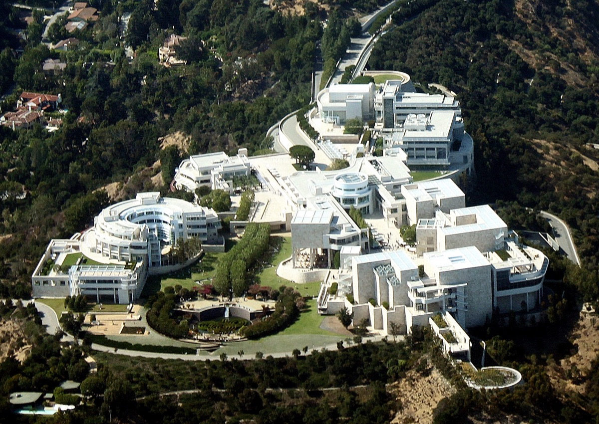
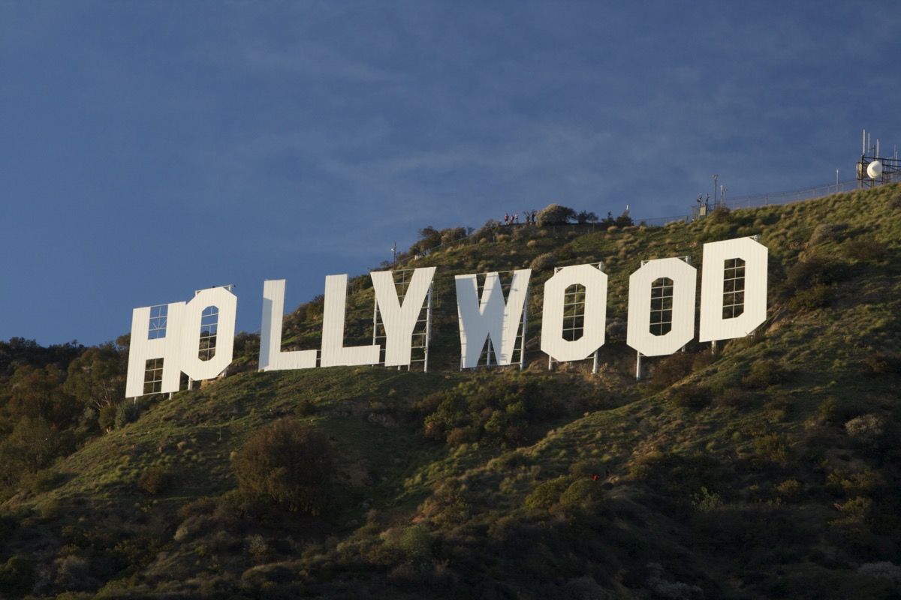

当日深度分时段行程与图文百科
盖蒂中心 (The Getty Center) 艺术轻轨与露天花园

🚊 无障碍轻轨直达山顶：从山脚停车场搭乘免费电动轻轨缆车直达山顶美术馆。馆内所有展厅均配备电梯与轮椅通道，平整开阔，收藏有梵高《鸢尾花》等名画。
🌺 中央露天花园与午餐：室外中央花园繁花似锦，向南可俯瞰洛杉矶全景与太平洋海岸线。在馆内庭院餐厅轻松享用午餐。
建筑与艺术百科：理查德·迈耶的白色石灰华艺术 (点击展开)
🏛️ 建筑用料：由著名建筑大师理查德·迈耶 (Richard Meier) 设计，外墙采用从意大利罗马运来的 1.6 万吨米黄色石灰华 (Travertine) 石材，阳光照耀下呈现温暖而高雅的米白质感。
🎨 镇馆名画：西展厅展出梵高在圣雷米疗养院创作的代表作《鸢尾花》(Irises)，色彩浓郁生动，全展厅均为无障碍平路。
好莱坞湖公园 (Lake Hollywood Park) 大草坪合影好莱坞标志

🏞️ 最佳经典机位：驱车前往好莱坞山脚下的好莱坞湖公园。车停路边即可步入开阔平坦的绿色大草坪，近距离正对著名的 好莱坞标志 (Hollywood Sign)，合影留念极其惬意，完全无需登山爬坡。
影史百科：好莱坞标志 (Hollywood Sign) 的百年传奇 (点击展开)
🎬 原为地产广告：这块立于 1923 年的标志最初写着“HOLLYWOODLAND”，原是房地产项目的户外广告牌。随着美国电影黄金时代的崛起，它于 1949 年去掉了“LAND”，成为全球电影工业的象征符号。
圣莫尼卡海滩 (Santa Monica) 66号公路终点 ➔ 太平洋落日
🌊 66号公路终点 (Route 66 End of Trail)：沿着完全平坦的圣莫尼卡木栈道慢步，在著名的“66号公路终点标志牌”前合影留念。
🌅 壮丽太平洋落日：吹着加州清凉的海风，听着海浪声，在木栈桥边静静凝望金色夕阳缓缓坠入浩瀚太平洋，为这场跨越犹他、亚利桑那、内华达与加州的精彩自驾之旅画上最温馨圆满的句号！
人文百科：66号公路在此融入太平洋 (点击展开)
🌊 终点牌的意义：建于 1909 年的圣莫尼卡码头是美国西海岸最古老的木质码头之一。木栈桥尽头的“Route 66 - End of the Trail”标志象征着全长 3940 公里的母亲之路在此到达大洋终点，是所有自驾旅人最具仪式感的打卡地。
- 盖蒂中心停车：盖蒂中心拥有正规多层地下停车楼（$25/车），配备专人指挥与安保监控，极其规范安全。
- 圣莫尼卡海滩停车：推荐停入海滩官方经营的 Structure 8 (215 Colorado Ave) 或周边市政停车楼（前 90 分钟免费，带监控电梯），步行至码头仅 3 分钟，切忌停靠偏僻无人看管路边。
- 车内零物品：全天游览期间，即便短暂下车拍照，车内前后座也切勿放置任何包袋或物品。